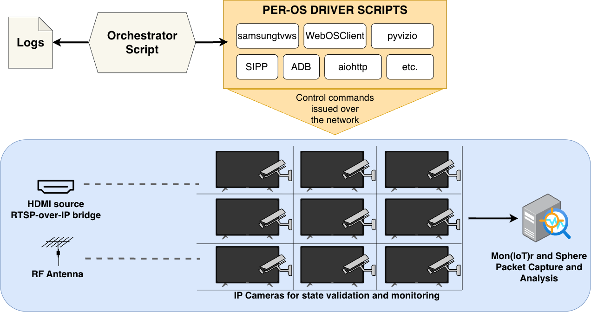

8
smart-TV operating systems, about 95% of the U.S. market
A privacy analysis of automatic content recognition on U.S. smart TVs
82% of U.S. households have a smart TV that can take snapshots of whatever is on screen and report them back. We measured where that data goes, and whether turning the feature off actually stops it.
Automatic content recognition (ACR) is built into most smart TVs. It identifies what's playing, whether it comes from an app, an antenna, a game console or a cable box.
The TV takes short audio or video snapshots of whatever is on screen.
Those snapshots, or fingerprints made from them, are sent over the internet to the ACR provider.
The provider compares them with a library of known content to work out exactly what you're watching.
Viewing habits can be used for targeted ads and shared with or sold to other companies.
Little is publicly known about how ACR behaves in practice. Deployments are opaque, and smart TVs are hard to test automatically. We asked three questions.
We built a testbed that plays the same content on every TV without anyone at the remote, records all of its network traffic, and then works out which traffic belongs to ACR.
Run thousands of controlled viewing experiments on 12 TVs and capture every packet they send and receive.
Use the controlled content to pick out the servers that respond to what's on screen, then compare their traffic across conditions.

Twelve smart TVs from ten manufacturers cover the eight operating systems that run about 95% of U.S. smart TVs, and more than 80% of the TV brands with over 3% of U.S. households. The operating system is what we compare, so we chose TVs to cover every major OS first, adding a second TV where one OS is sold by several brands.
All traffic to and from each TV was captured with the Mon(IoT)r software and the SPHERE research infrastructure. In total we ran 5,943 controlled experiments.
A control machine sends the same content to every TV through three routes, so each viewing scenario is identical across devices.
HDMI-to-RF modulators broadcast our own custom channel to each TV's antenna input.
IP-to-HDMI converters turn video streamed from the control machine into an HDMI signal, like a cable box or console.
Google Pixel phones and a Windows laptop running Pigeoncast and Miracast cast to each TV using its own mirroring protocol.
The scenarios cover the common ways people use a smart TV. Idle, with the TV on the home screen and nobody using it, is the control for spotting baseline traffic.
| Scenario | Sub-scenario | What plays |
|---|---|---|
| Idle | – | The home screen, with no interaction |
| Antenna | Channel | Our custom broadcast channel with moving picture and sound |
| Black screen + audio | A constant black frame with sound, over the antenna signal | |
| Dynamic + no audio | Moving picture with no sound, over the antenna signal | |
| First-party streaming | – | The free streaming service built into the TV's operating system |
| Third-party streaming | Netflix | A subscription-only service |
| Tubi TV | A free, ad-supported service | |
| YouTube | A hybrid of free and paid content | |
| HDMI | – | Moving picture with sound from an external device |
| Screen mirroring | – | A phone or laptop mirrored over the TV's own protocol, playing video with sound |
Some ACR systems recognize content by its audio, others by its video. By switching each one off in turn on our custom antenna channel, we can tell which a TV relies on. The antenna is a natural ACR target, because what you watch over the air can't be tracked by any app.
| Antenna scenario | Moving picture | Sound | What it tells us |
|---|---|---|---|
| Channel | Yes | Yes | Baseline: ACR can use either signal |
| Black screen + audio | No | Yes | Traffic here points to audio fingerprinting |
| Dynamic + no audio | Yes | No | Traffic here points to video fingerprinting |
We wrote control scripts using each OS's Python remote-control library for six of the operating systems. Xumo OS and VIDAA OS had no reliable library, so we drove them through their Android remote apps using ADB.
The hard part was that TV menus change, so each OS needed its own tested sequence of commands. An IP camera on every TV recorded each run, and we reviewed the frames to confirm it worked. Runs that failed because of internet outages or unexpected TV behavior were repeated.
Twelve TVs from ten manufacturers, covering operating systems with about 95% of the U.S. smart-TV market. Where one operating system is sold under several brands, we tested more than one TV.
| Operating system | U.S. market share | TVs tested |
|---|---|---|
| Tizen OS | Samsung | |
| Roku OS | Roku, TCL | |
| webOS | LG | |
| SmartCast OS | Vizio | |
| Google TV OS | Sony (2), Hisense, TCL | |
| Fire TV OS | Amazon Fire | |
| Others, including VIDAA and Xumo | Supersonic, Westinghouse | |
| Total | 12 TVs |
Results reflect these devices and firmware versions at the time of testing and may not carry over to other models or regions.
We counted a scenario as tracked when the TV sent regular traffic to its ACR endpoint in more than 80% of the 30 opted-in runs. The results were clear-cut: scenarios were tracked in nearly every run or almost never.
Each square shows the share of 30 runs in which the ACR endpoint received content-correlated traffic; 80% or more counts as tracked. Only operating systems where we identified and validated an ACR endpoint are shown, and Roku OS has a row for each of its two TVs.
We ran every scenario 30 more times after opting out in the TV's settings. Small amounts of background traffic (under 5% of the opted-in volume) were set aside; anything more was flagged as traffic consistent with ACR.
Most ACR traffic is encrypted, so these results come from how the traffic behaves, not from reading it. We can't confirm what the data contains, or whether it is processed or kept on the companies' servers. VIDAA OS is the exception: its ACR traffic is unencrypted, so we read it directly.
Even where we can't read ACR traffic, its behavior shows how a TV recognizes content. And on two platforms, what you watch travels unencrypted.
By removing the picture or the sound from our antenna channel, we can tell which signal each TV's ACR relies on.

| Operating system | Recognizes content by | What we saw |
|---|---|---|
| Tizen OS (Samsung) | Video | ACR traffic disappeared on a black screen; removing sound changed nothing. |
| Google TV OS (Sony, Samba TV ACR) | Video | Traffic fell by 52.9% on a black screen with sound. |
| webOS (LG, Alphonso ACR) | Audio | Traffic fell by 97.3% when video played without sound. |
| VIDAA OS (Supersonic) | Audio | The unencrypted messages contain an audio fingerprint. |
| Fire TV OS, Roku OS, SmartCast OS | Can't tell | Traffic looked the same with and without picture or sound. |
VIDAA OS sends ACR data to servers run by Unruly over MQTT without encryption, so anyone on the network path between the TV and those servers can read it. Each message carries a Client ID, a permanent identifier for the TV that can't be reset, along with the time zone, the app name, the input (antenna, HDMI), the antenna channel and an audio fingerprint.
The app name alone can be revealing. We saw ACR on apps such as VIDAA Kids, which raises concerns under the U.S. children's privacy law (COPPA), and Christianity and Money. VIDAA's own HOME OS app sent show and film titles in place of the app name.
The servers reply with a genre for what they recognized, including categories such as Religious, Health and Medicine, and Political. When we played The Story of Moses over HDMI, it came back labeled Religious.
Partly fixed. VIDAA confirmed the problem after we reported it. The server now requires a login, but messages are still sent unencrypted.
We could also send a previously seen message back to the server, and our own test TV received it. That means an attacker could push fake or harmful messages to TVs. For ethical reasons, we didn't try.
Separately from ACR, Vizio's free streaming service WatchFree+ puts the name of each show or channel into unencrypted web address lookups (DNS queries and SNI) to Amagi, the company that delivers the streams.
Anyone on the network path, such as an internet provider or whoever runs the network, can rebuild an ordered list of what was watched without any ACR data. None of the operating systems we audited mention Amagi in their privacy policy or settings, and there is no way to turn this off.
soul-5mincrafteng-vizio.amagi.tv
An opt-out should do what it says, and what you watch should never travel unencrypted.
Neither step stops the program-title leak in Vizio's WatchFree+.